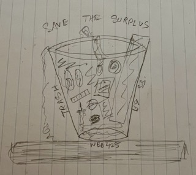

About You Want The Long Story?
Okay, let's talk.
About the Project

Under Construction - TO ADD EXPANDED ABOUT, LINKED FROM TWP MAIN
I have always aspired to reduce the waste I generate. I could talk about sustainability in abstract terms, but to be honest my habits have been invisible to me from the moment the bag left my hand. As a result, I have started tracking my trash each week to understand my usage and consumption patterns. Writing it down forces me to confront my reliance on packaged food, the amount of plastic said convenience generates, and how quickly those “small” items add up.
Beyond the confines of my household, I believe that making this data public can spark a necessary conversation about systemic waste. It is one thing to know that society has a trash problem, and yet another to see a week's worth of non-recyclable debris laid out as a personal footprint. Sharing this journey builds up the path towards better personal accountability. When habits are visible, even in a small way, they feel more real and harder to ignore. It shifts waste from something distant and inevitable to something shaped by daily (sometimes momentary) decisions.
Over the duration of this exercise, it became less about guilt and more about awareness. I have started pausing before purchases and asking whether something is necessary, reusable, or avoidable. Documenting my trash each week turns an automatic routine into a conscious practice, helping me align my actions more closely with the values I already claim to hold.
TO BE CONTIn the end, I hope this project inspires others to reflect on their own waste habits and consider small changes that can collectively make a big difference. By sharing my journey, I want to contribute to a larger conversation about sustainability and encourage others to take steps towards reducing their environmental impact.
(References for the preface can be found here in the References section at the end of the TWP page)
About Me

Hi, I'm Sumedh Sinha!
TBD
Fun Fact (for real!): I recently visited the United Nations HQs to learn more about the 17 Sustainable Development Goals. Here's my LinkedIn post about it.
Contact Information: Feel free to reach out to me through any of the following channels
- Email: sumedh.sinha@rutgers.edu
- LinkedIn: https://www.linkedin.com/in/sinhasumedh/
Page Version History
Version 1.0- Contains expanded Preface, linked from TWP Main.
- Added details about myself.
- Project illustration attached.